SCRAPPEDMaría & Estefanía
Registro interactivo de canciones, diseños, sprites y escenarios que fueron considerados durante el desarrollo, pero no formarán parte de la demo exclusiva.
Banish Him

Al reproducir cualquiera de las versiones, el panel superior contará progresivamente por qué la canción fue descartada. Pausar, adelantar o retroceder el audio también sincroniza el registro.
Exhasustened
0:00 — María inicia
En la versión 1, la imagen cambia automáticamente de María a Estefanía aproximadamente en 0:35.6, reflejando el reemplazo planeado durante la canción.
La propuesta mostraba a María agotándose después de perder una batalla musical; Estefanía tomaría su lugar. Se descartó porque no existía una explicación narrativa segura y la secuencia nunca consiguió una dirección fija.
Harverserts
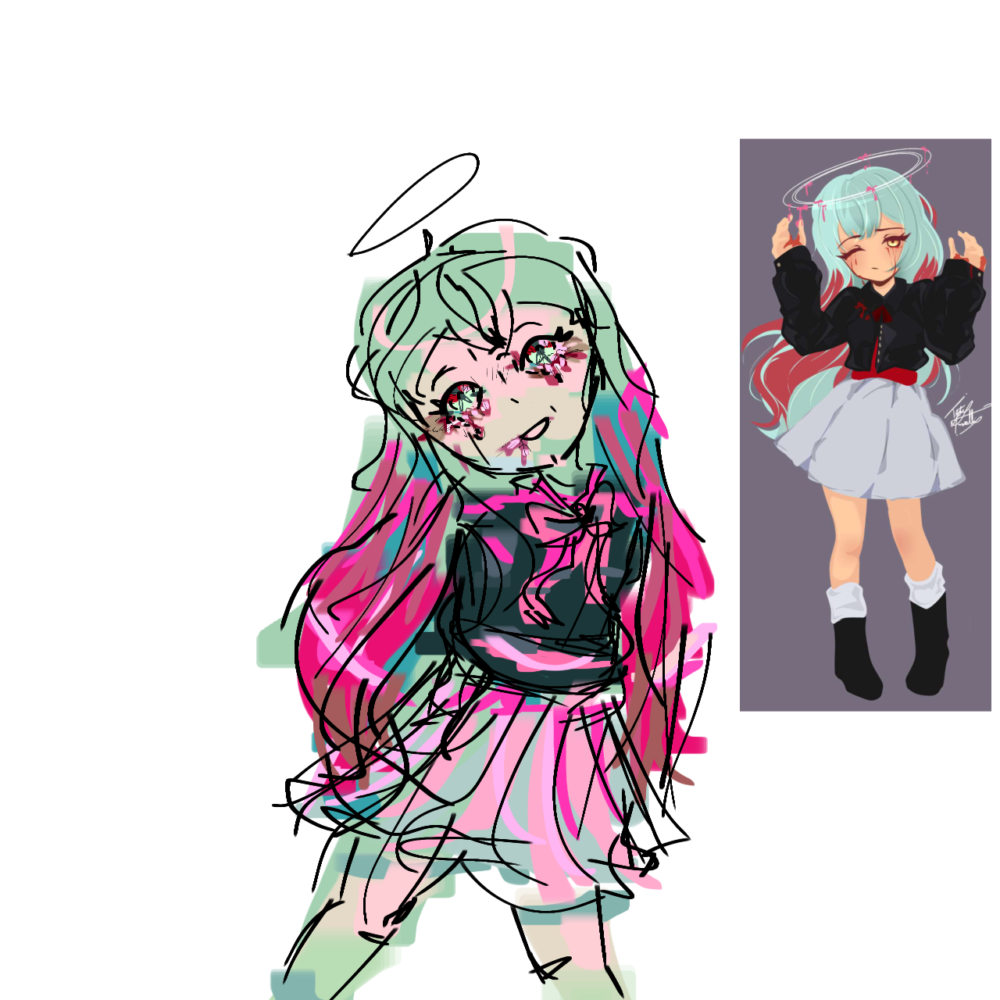
Harverserts fue un título de desarrollo. La propuesta surgió como idea de la codirectora, pero nunca obtuvo una historia, función o concepto fijo, por lo que no avanzó hacia la demo exclusiva.
Diseños y sprites antiguos
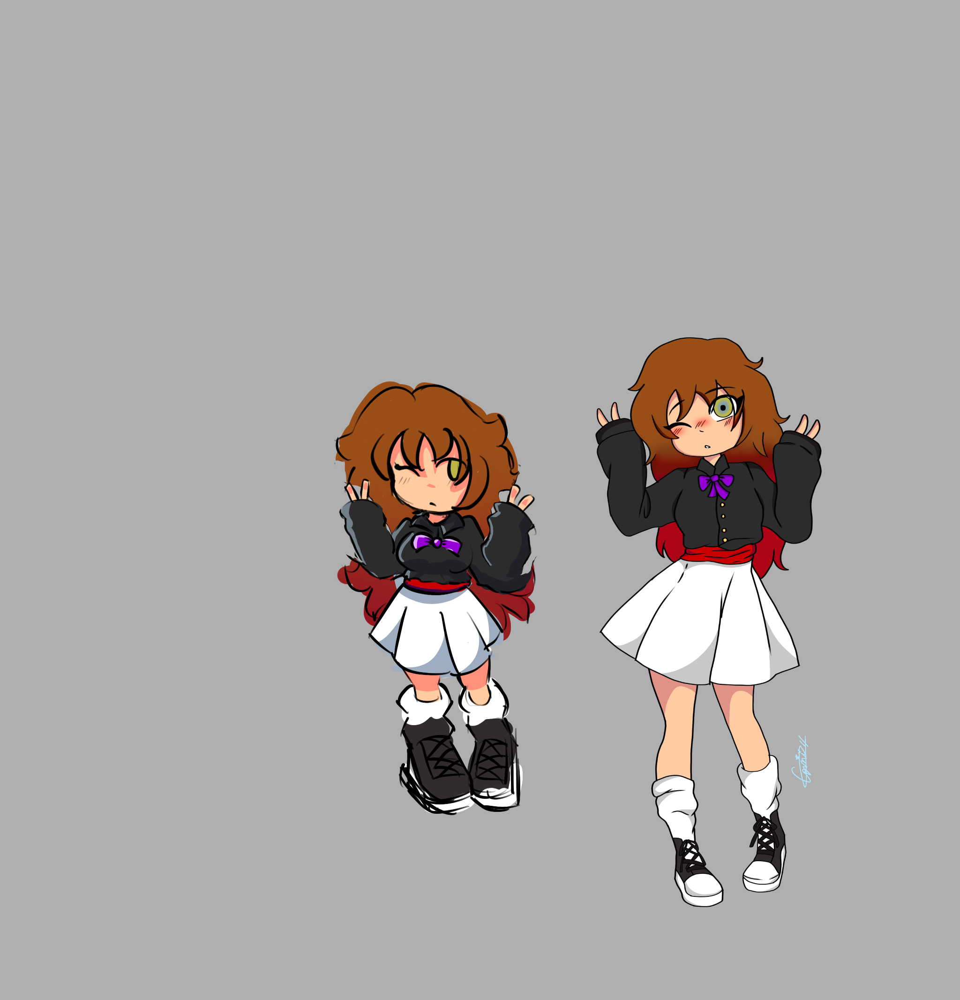
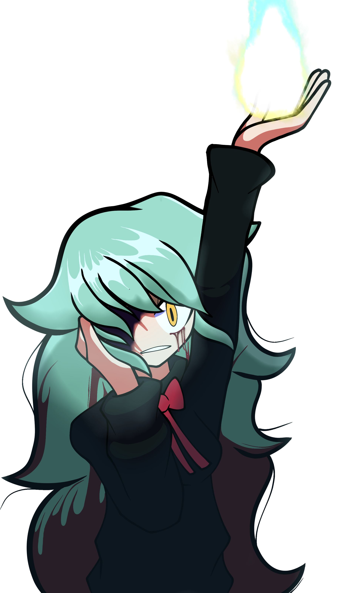

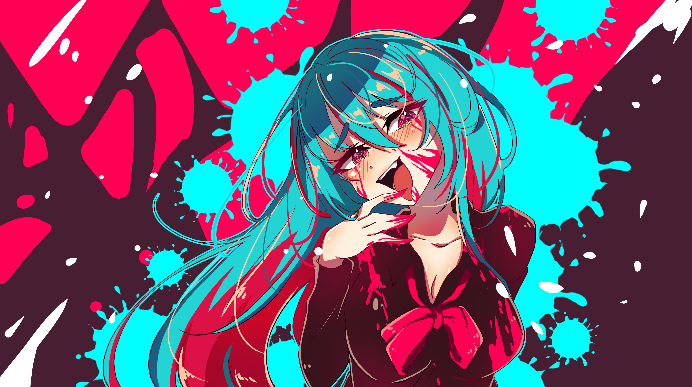
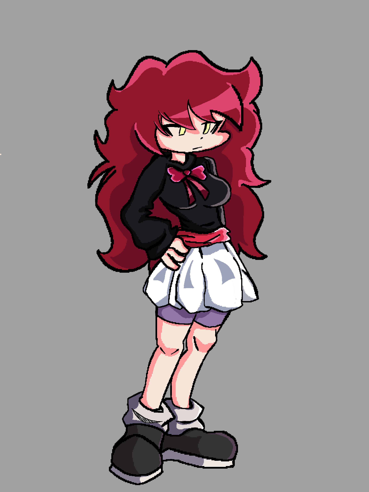
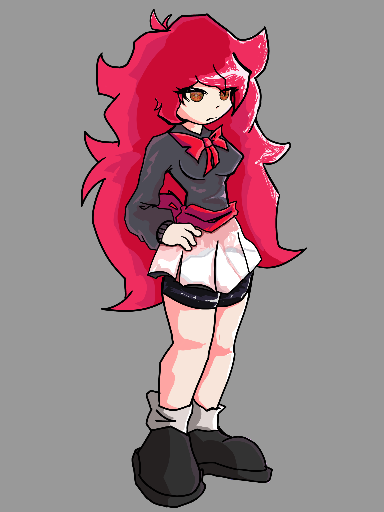
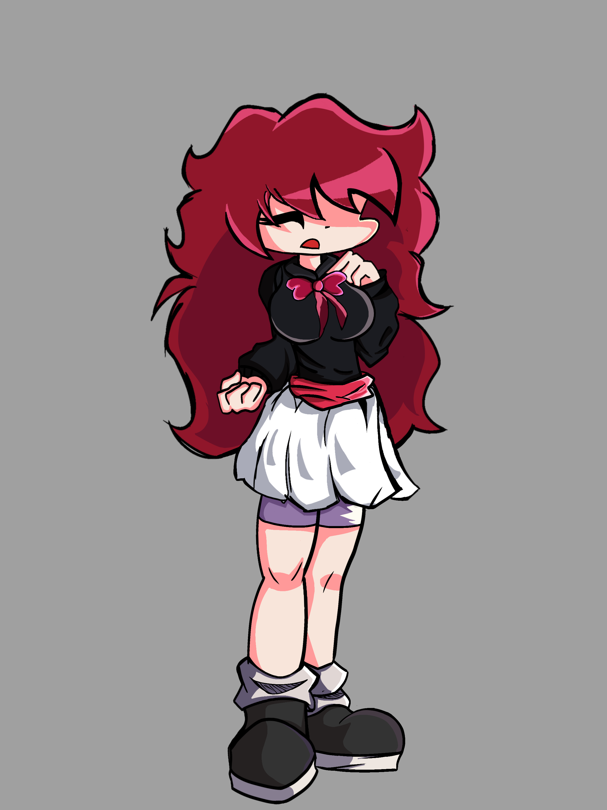
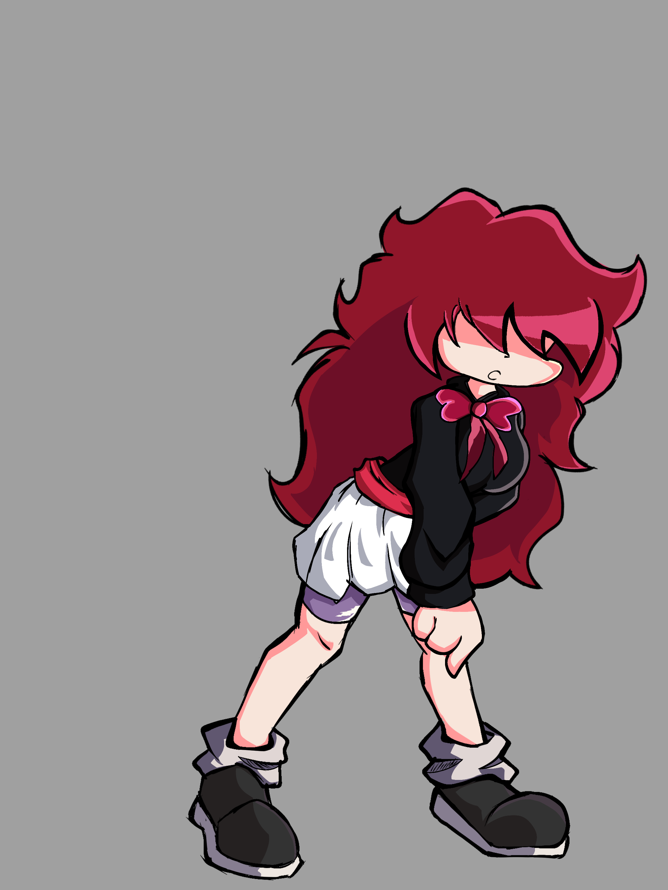
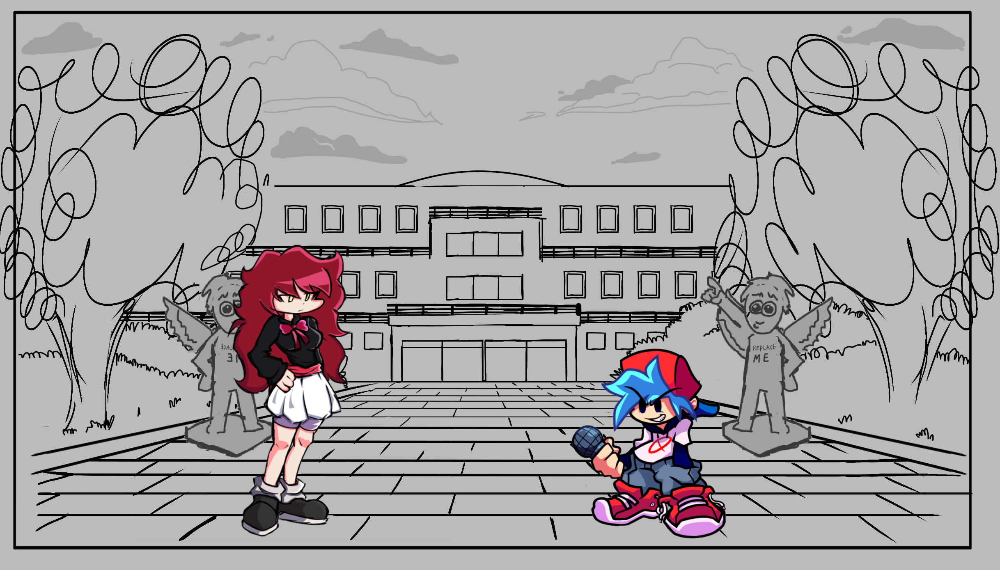
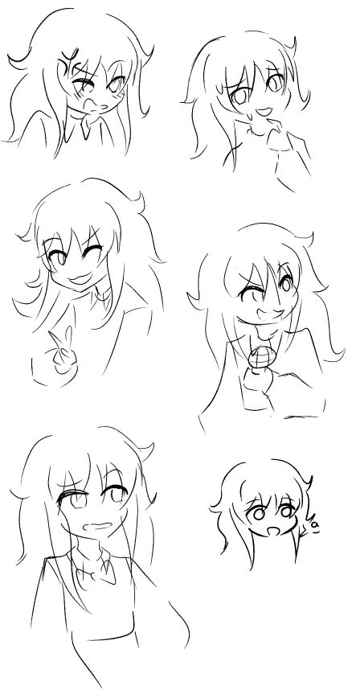
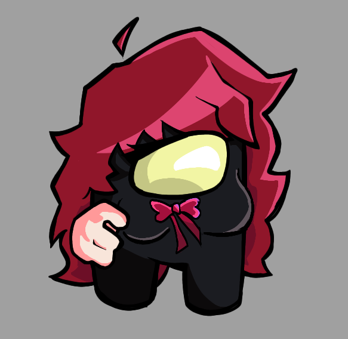